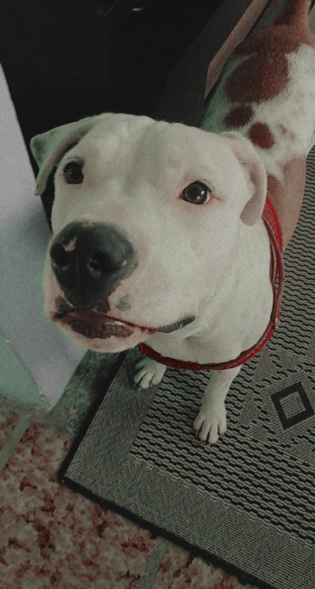

Este site é dedicado a Luna, minha doguinha.
-> Aprendi a fazê-lo com o Dev Web!
-----Raça de cães-----
Pit bull — “abreviação” de American Pit Bull Terrier — é uma raça de cães oriunda dos Estados Unidos. É uma raça pura de cães de porte médio e atléticos, desenvolvida no século XIX, pertencente ao grupo terrier, subtipo terrier de tipo bull. Wikipédia.
